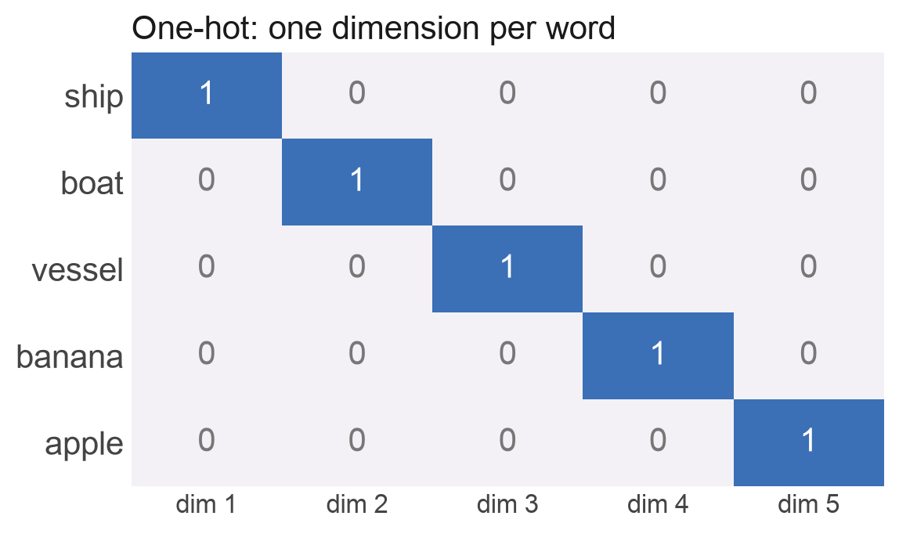
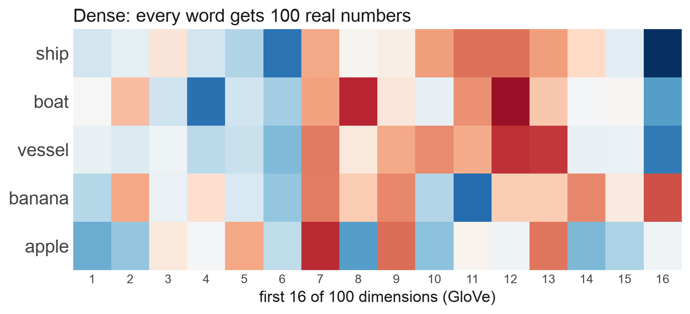
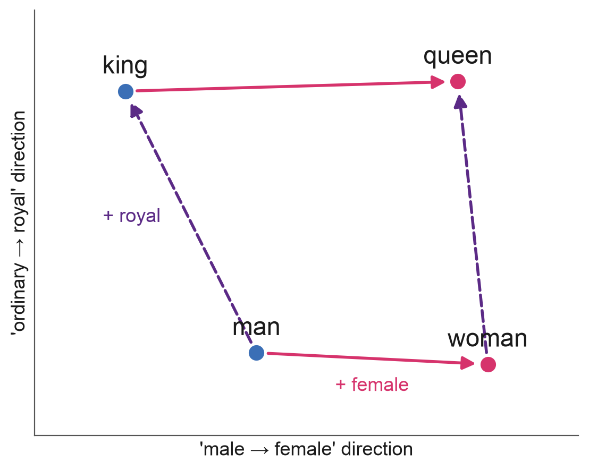

Embeddings
BASC0005 Quantitative Methods 2: Data Science and Visualisation
Ollie Ballinger
Ships That Go Dark
- Large ships broadcast their identity and position by radio: the Automatic Identification System (AIS)
- But AIS can be switched off, spoofed or never fitted. A ship that isn’t broadcasting is ‘dark’
- Dark vessels are linked to illegal fishing, sanctions evasion and smuggling
- Global Fishing Watch estimates that about 75% of the world’s industrial fishing vessels are not publicly tracked (Paolo et al., Nature, 2024)
- Satellites can see dark ships. The question is: which ship is it?
One Idea Behind Modern AI
- Your phone recognises your face by turning each photo into a list of numbers: an embedding
- Photos of the same face get similar numbers; different faces get different numbers
- ‘Who is this?’ becomes ‘which stored photos have the closest numbers?’
- The same trick works for words, documents, songs, places on Earth, and in principle ships seen from space
- Turning things into vectors so that similar things are close powers search engines, recommendation systems, ChatGPT and much of modern AI
Outline
- What Is an Embedding?
- Measuring Similarity
- Where Embeddings Come From
- Visualising Embeddings
- Using Embeddings Well
1. What Is an Embedding?
Computers Need Numbers
- Every model we’ve built so far takes a table of numbers as input
- Some data is already numeric: income, age, air quality
- Much of the interesting data isn’t: words, documents, photos, satellite images, songs, people
- In Week 4 we turned text into numbers by counting words and using spaCy’s sentiment scores
- An embedding is a more powerful answer: a learned list of numbers (a vector) that captures what something means
- Similar meaning → nearby vectors
Attempt 1: One-Hot Encoding
- Give every word its own column
- A vocabulary of 50,000 words → vectors with 50,000 dimensions, almost all zeros
- Every word is equally different from every other word
- ‘ship’ is as far from ‘boat’ as it is from ‘banana’
- This is what dummy variables do in a regression

Attempt 2: Dense Vectors
- Give each word a short list of real numbers, e.g. 100
- No single number means anything on its own. Meaning is in the pattern
- Now similarity is measurable (GloVe):
- ship · boat: 0.83
- banana · apple: 0.51
- ship · banana: 0.18

Where Do the Numbers Come From?
- ‘You shall know a word by the company it keeps’ (J.R. Firth, 1957)
- Words that appear in similar contexts tend to have similar meanings
- ‘The ___ sailed into port’: ship, boat, vessel, ferry…
- word2vec (Mikolov et al., Google, 2013) learns vectors by training a small neural network to predict a word’s neighbours in billions of sentences
- Nobody tells it what words mean. The vectors are a by-product of getting good at the prediction task
- GloVe, the model in these slides, does something similar using word co-occurrence counts
king − man + woman ≈ queen
- Directions in the space can carry meaning
- Take the vector for king, subtract man, add woman
- The nearest word to the result is queen (similarity 0.77), then monarch and throne
- Nobody programmed this in. It emerged from reading text

Embeddings Learn Our Biases Too
- The same arithmetic finds patterns we’d rather it didn’t
- Bolukbasi et al. (2016): in word2vec trained on news, man : computer programmer :: woman : homemaker
- An embedding is a compressed summary of its training data, including its stereotypes
- When embeddings feed into CV screening, search ranking or policing tools, those biases become decisions
- Always ask: what was this trained on, and what did it learn to ignore?
Anything Can Be Embedded
| Input | Example models | What you can do with it |
|---|---|---|
| Words | GloVe, word2vec (100–300 numbers per word) | Find words with similar meanings |
| Sentences | Sentence transformers | Search by meaning, not keywords |
| Images | CLIP, DINO | Find similar photos; search images with words |
| Places | Satellite foundation models | A vector for every patch of the Earth |
| Songs and users | Recommender systems | ‘People who liked this also liked…’ |
2. Measuring Similarity
Nearest-Neighbour Search
- To identify a query, compare its vector with every stored vector and return the top k
- This is k-nearest neighbours (kNN), which we’ll meet again for prediction in Week 10, used for retrieval instead of prediction
- If most of the neighbours share a label, that’s probably the answer
- The same pattern powers:
- Reverse image search, ‘more like this’ on Spotify and Netflix
- Retrieval-augmented generation (RAG): chatbots that look up relevant documents before answering
Searching Millions of Vectors
- One query against a million stored vectors is quick
- Comparing every item with every other grows with the square of the data: 100 million items is ~10¹⁶ comparisons
- Approximate nearest-neighbour indexes group similar vectors in advance: a little less accurate, far faster
- e.g. FAISS (Meta), or the vector search built into databases such as Google BigQuery and PostgreSQL (pgvector)
- A vector database is exactly this: the storage layer behind semantic search and RAG chatbots
Where to Draw the Line?
- Nearest-neighbour search always returns something, even when nothing in the database is really similar
- So we need a cut-off: below this similarity, call it ‘no match’
- Any cut-off trades false matches against missed matches: precision vs recall, which we’ll meet in Week 10
- Similarity is evidence, not proof
3. Where Embeddings Come From
Learned, Not Designed
- An embedding model is (almost always) a neural network
- Input goes in (a word, an image); the network’s last layer of numbers comes out; that’s the embedding
- Nobody chooses what each number means. The network learns whatever helps it with its training task
- So the training task decides what ‘similar’ means
- Trained to predict neighbouring words → similar = used in similar contexts
- Trained to tell faces apart → similar = the same person
Pretrained Models You Can Use Today
| Model | Input | Vector length | Good for |
|---|---|---|---|
| GloVe | Words | 50–300 | Word similarity, simple text features |
| all-MiniLM-L6-v2 | Sentences | 384 | Semantic search, clustering documents |
| CLIP | Images and text | 512 (ViT-B/32) | Searching photos with words |
| DINOv3 (ViT-B/16) | Images | 768 | General-purpose image features |
Most are free to download from Hugging Face and run in Colab. You rarely need to train your own
4. Visualising Embeddings
Squashing Hundreds of Dimensions into 2
- We can’t plot hundreds of dimensions, so we project them down to 2 for a picture
- PCA (principal component analysis): the best flat ‘shadow’ of the data. Fast, faithful to big distances, but often muddled
- t-SNE (2008) and UMAP (2018): try to keep each point’s nearest neighbours nearby. Great at revealing clusters
- Next week’s clustering methods (k-means, hierarchical) work on embeddings too, and should be run on the full vectors, not the 2D picture
Reading t-SNE and UMAP Plots Safely
- Cluster sizes mean nothing: t-SNE expands dense clusters and shrinks sparse ones
- Distances between clusters mean little: two clusters far apart on the plot may be close in the real space
- Settings change the picture: perplexity (t-SNE) or number of neighbours (UMAP), and the random seed
- Colour is doing the storytelling: clusters look convincing once coloured by a label you already know
- Use them to explore and explain, not as evidence. Measure things (e.g. nearest-neighbour accuracy) in the original space
Case Study: Finding Mines
- Rare-earth mining in Myanmar: satellite image patches turned into embeddings
- Projected to 2D with UMAP, the known mines (red) sit in their own region
- Patches near that region are candidate unreported mines

5. Using Embeddings Well
When Embeddings Go Wrong
- Shortcuts: a model can match the background instead of the object: the same beach, the same sky, the same satellite scene
- Look-alikes: different things that really do look the same (twins, identical products, sister ships)
- Out of domain: a model trained on everyday photos may not capture what matters in satellite images or X-rays
- Noisy labels: if the ‘truth’ you test against is wrong, a correct match looks like a mistake
- An embedding encodes what its training rewarded. Check that’s what you care about: look at the errors by eye, and check the labels as hard as the model
Ethics and Limits
- Bias: embeddings inherit their training data’s stereotypes and pass them on to every system built on top
- Surveillance and dual use: face recognition, and anything like it, can track people who never agreed to it. Who gets access?
- A match is a probability, not a verdict: a false match can wrongly implicate someone. Report a confidence score and have a human check
- Hard to explain: no single number means anything, so it’s hard to say why two things were matched
Recap
- An embedding turns something (a word, an image, a place) into a vector so that similar things are close
- Cosine similarity measures closeness by angle; nearest-neighbour search finds the closest items
- Embeddings are learned: the training task decides what ‘similar’ means, and embeddings inherit their data’s biases
- Pretrained models get you started, but a general model may not capture what you care about
- t-SNE / UMAP are for looking, not proving
Any Questions?
o.ballinger@ucl.ac.uk
Further reading: Jay Alammar, The Illustrated Word2vec (blog) · Wattenberg et al. (2016), How to Use t-SNE Effectively (distill.pub) · Paolo et al. (2024), Satellite mapping reveals extensive industrial activity at sea, Nature · Bolukbasi et al. (2016), Man is to Computer Programmer as Woman is to Homemaker?
BASC0005 Quantitative Methods 2